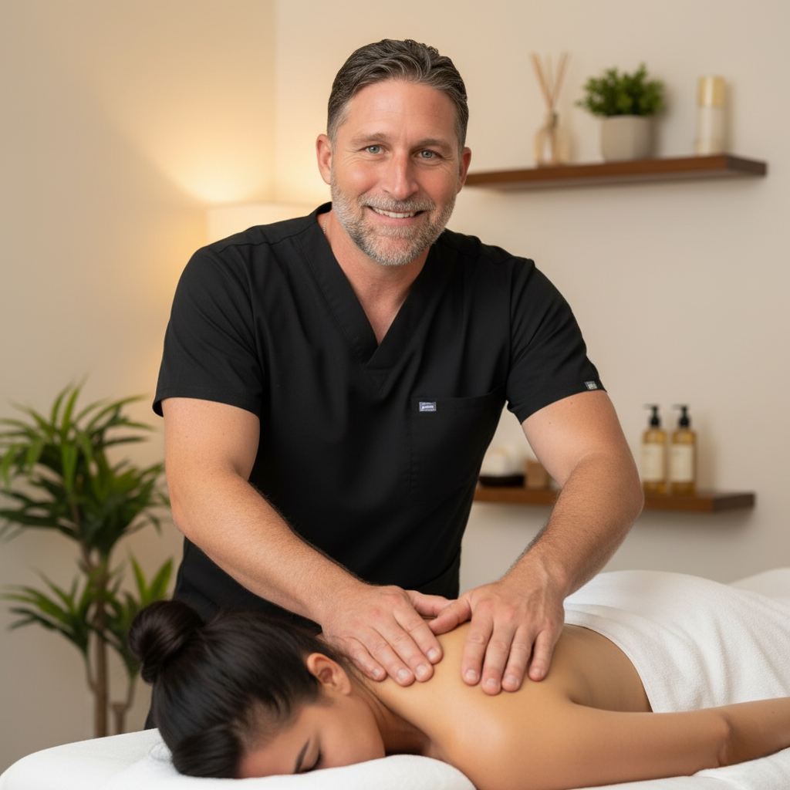

Education, recovery guidance, and wellness perspectives from Zachary Ellis.
Most people seeking relief from chronic pain have tried massage — and many have found it helpful, at least temporarily. But there's a meaningful distinction between general massage therapy and neuromuscular therapy (NMT), and understanding it can change the way you think about your pain.
Neuromuscular therapy is a specialized form of soft tissue manipulation that addresses the relationship between the nervous system and the musculoskeletal system. Rather than working on the surface of the body for general relaxation, NMT targets specific structures — trigger points, areas of nerve compression, postural distortions, and ischemic tissue — to identify and address the actual source of pain.
The core premise is simple: most chronic pain is not where it appears to be. A persistent ache between your shoulder blades may originate from a trigger point in a completely different muscle. NMT trains therapists to map these relationships and work systematically to resolve them.
A trigger point is a hyperirritable spot in skeletal muscle — often felt as a tight "knot" — that produces referred pain when pressed. These points can develop from overuse, injury, poor posture, emotional stress, or even nutritional deficiencies. They don't always hurt on their own, but they generate predictable patterns of pain elsewhere in the body.
NMT practitioners use sustained, precise pressure on these points to interrupt the pain-spasm-pain cycle. The release is often immediate, and the referred pain pattern disappears. It's one of the most clinically verifiable and reliably effective techniques in manual therapy.
What separates NMT from general massage is the neurological lens. The nervous system governs everything — muscle tone, pain perception, healing capacity. By working with, rather than against, the nervous system's signals, NMT creates lasting change in the body's default tension patterns.
This is why NMT clients often report that results accumulate over time — each session builds on the last, retraining the nervous system toward greater ease and resilience.
NMT is particularly effective for chronic pain conditions, postural problems, headaches and migraines, sciatica, repetitive strain injuries, and recovery from sports or occupational overuse. If you've been dealing with pain that doesn't fully resolve with general massage, NMT may offer a more targeted path forward.
Zachary Ellis is a trained NMT Specialist practicing in Modesto, CA. Each session integrates neuromuscular work with complementary modalities — craniosacral therapy, deep tissue, and Reiki — for a comprehensive approach to healing.
Book a Session
Discover how NMT goes beyond traditional massage to target the nervous system, release chronic tension, and reset your body's natural alignment — and why it works when other approaches haven't.
Read Article →At Ellis Restorative Therapies, we don't offer 30-minute "express" sessions. This is a deliberate choice — and one that clients often ask about. Here's the thinking behind it.
The body does not operate on a timer. Genuine therapeutic change — the kind that affects how you feel for days or weeks after a session — requires a sustained window of focused work. The nervous system needs time to downregulate. Fascia needs time to soften. Trigger points need time to fully release.
Rushing that process doesn't just limit results — it can actually counteract them, leaving the body stimulated rather than restored.
Our 60-minute session is ideal for clients who know what they need. If you have a recurring area of tension, a specific injury, or you're maintaining results from previous sessions, 60 minutes provides enough time to do meaningful clinical work without rushing.
That said, 60 minutes is not a full-body session. It's focused work — and it works best when you come in with a clear sense of your primary concerns.
For most clients — especially new ones — 90 minutes is where the real magic happens. There's enough time for Zachary to do a proper assessment, work through multiple areas of the body, integrate different modalities, and give the nervous system time to fully settle.
The shift that happens in the final 20–30 minutes of a 90-minute session is often the most profound part of the work — when the body finally lets go of its last layers of holding.
The 120-minute session is for those who are ready for a full reset. It allows for extended craniosacral work, thorough myofascial release across the entire body, Reiki integration, and time for the body to be truly unhurried in its healing process.
Many clients find that one 120-minute session does more than several shorter ones — not because more time is always better, but because there are thresholds of relaxation the body simply cannot reach in 60 minutes.
We understand that longer sessions cost more. They also deliver more. We'd encourage you to think of your session not as an expense, but as an investment in your nervous system, your posture, your pain levels, and your capacity to show up fully in your life.
If you're unsure which session is right for you, reach out — Zachary is happy to discuss your situation and make a recommendation.
Ask a QuestionTrue recovery takes time. Learn why our session durations are specifically designed to allow for deep, uninterrupted healing.